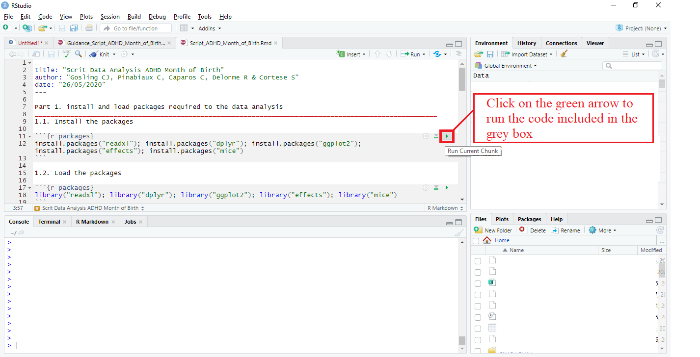

4 Perform data analysis (~15mn)
4.1 How to use the script
The R file script will help you load your dataset and either recode values or perform the data analysis. To run the script, follow the instructions described below:
- Open R Studio
- Load the script (the file entitled “Script_Performing_Analysis_YourName_MoB_ADHD.Rmd” sent you via email).
To load the script:
- Click on File (top left of R studio panel)
- Then, click on Open file..
- an explorator window should open, you can locate and open the script.
- Once the script is loaded, run each part of the script sequentially (starting from Part 1) by clicking on the green arrow at the top right of each greybox

4.2 Install the packages
Start by running the “Part 1. install packages required to the data analysis” to install the required packages
4.3 Load your dataset
Once packages have been installed, you will have to load your dataset. Several options are available in the script, depending on the file format.
Note that running the code to load your file will open an explorator window. However, this window sometimes opens behind all the open pages on your computer. To see this window, reduce R studio and all your open pages until you see it.
To open the explorator window loading your dataset, run either :
- “Part 2.1.A.” if your dataset is stored in .txt format or
- “Part 2.1.B.” or “Part 2.1.C.” if your dataset is stored in .csv format (choose the appropriate separator) or
- “Part 2.1.D.” if your dataset is stored in .xls/xlsx format
4.4 Visualize your dataset
View your dataset by running “Part 2.2 - Visualize your dataset” to ensure that the dataset has been correctly loaded and that no issue has occured. Note that running this code will open a new tab in R studio named “Data_ADHD”. Once you have checked your data, you can come back to the script by clicking on the initial tab named “Script_IPD_ADHD_MoB_YourName.Rmd”
4.5 Recode the dataset
This part is useful if, and only if, you have not recoded the dataset manually.
If you have not recoded your dataset manually, run the “Part 3 - Automating recoding of the data” of the script. Once you have run the “Part 3”, ignore the following point 4.6 of this document and jump to the section 5 to export the file generated
If your dataset is correctely formatted, jump to the next point (4.6)
4.6 Perform data analysis
Once your dataset is correctly formatted, the last step is to perform data analysis by running “Part 4 - Perform data analysis”. Once you have run the Part 4, you can export the results by following indications in the section 5 of this document.